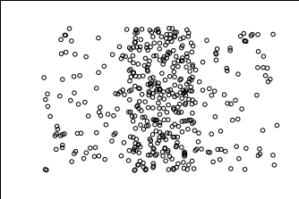
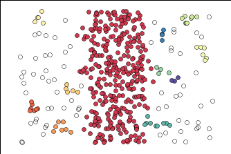
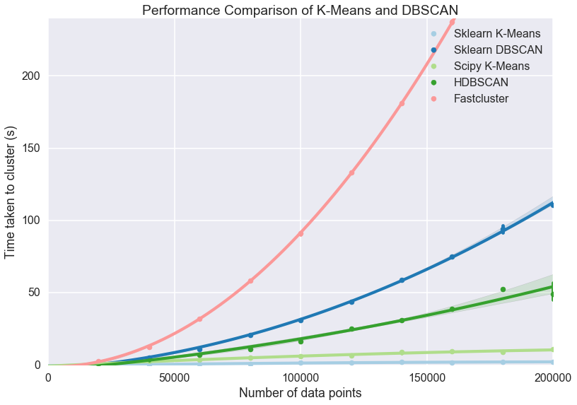

I was recently asked to give a lightning talk regarding a clustering algorithm called HDBSCAN. HDBSCAN is based on the DBSCAN algorithm, and like other clustering algorithms it is used to group like data together.
I covered three main topics during the talk: advantages of HDBSCAN, implementation, and how it works.
Advantages
Regular DBSCAN is amazing at clustering data of varying shapes, but falls short of clustering data of varying density. You can see this by going to Naftali Harris's blog post about DBSCAN and play around with the density bars scatterplot.
Below is a replica of the density bars scatterplot on Naftali's site. You can see that there is one main center cluster and noise on the left and right.

After playing with the parameters, below is how DBSCAN performed. It was able to get the center cluster, but also produced many mini clusters that don't make that much sense.

Below is how HDBSCAN performed. I was able to get only one cluster, which I was looking for. Unfortunately, no algorithm is perfect and it did put some of the noise into the purple cluster, but it was closer to what I was looking for than regular DBSCAN.

In addition to being better for data with varying density, it's also faster than regular DBSCAN. Below is a graph of several clustering algorithms, DBSCAN is the dark blue and HDBSCAN is the dark green. At the 200,000 record point, DBSCAN takes about twice the amount of time as HDBSCAN. As the amount of records increase, so will the discrepancy between DBSCAN and HDBSCANs performance.

Implementation
HDScan is a separate library from scikitlearn so you will either have to pip install it or conda install it.
Both algorithms have the minimum number of samples parameter which is the neighbor threshold for a record to become a core point.
DBSCAN has the parameter epsilon, which is the radius those neighbors have to be in for the core to form. Here is the DBSCAN implementation for the plot above DBSCAN(eps = 0.225, min_samples=4).
HDBSCAN has the parameter minimum cluster size, which is how big a cluster needs to be in order to form. This is more intuitive than epsilon because you probably have an idea of how big your clusters need to be to make actionable decisions on them. Here is the HDBSCAN implementation for the plot above HDBSCAN(min_samples=11, min_cluster_size=10, allow_single_cluster=True).
How It Works
Both algorithms start by finding the core distance of each point, which is the distance between that point and its farthest neighbor defined by the minimum samples parameter. Since the blue dot falls in the green dot's radius, the green dot can capture the blue dot as part of its cluster. However, the red dot does not fall in the green dot's radius and vice versa, so neither dot can capture each other (though they can be linked through other dots).

The potential clusters can form a dendrogram, and the cutoff point for DBSCAN on the dendrogram is epsilon.

HDBSCAN approaches this differently by throwing out the tiny off shoots, and instead keeping the biggest clusters as defined by the minimum cluster size parameter. This results in a more condensed dendrogram as seen below.

HDBSCAN is built for the real-world scenario of having data with varying density, it is relatively fast, and it lets you define what clusters are important to you based on size. Overall, HDBSCAN seems like a great algorithm. If you would like the link to my slide deck for the corresponding video above, click here.
Sources
High Performance Clustering with HDBSCAN Video